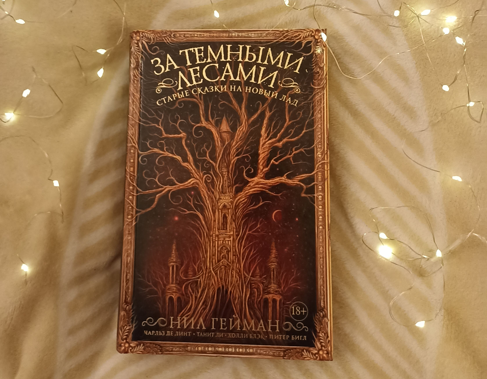

Название: Сборник повестей
Автор: Булычев Кир
Год издания: 2019
Состояние: Нормальное
Описание: Книга из серии "Звезды советской фантастики", содержит четыре повести из цикла о Кире Орват: "Детский остров", "В куриной шкуре", "Предсказатель прошлого" и "Последние драконы".

Название: За темными лесами
Автор: Нил Гейман
Год издания: 2018
Состояние: Отличное
Описание: